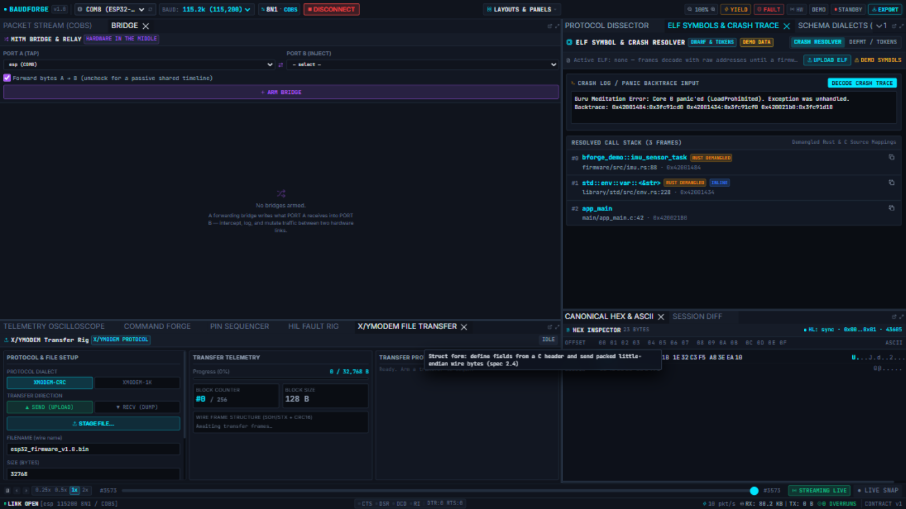

ELF Symbols & Crash Trace
Load your firmware's ELF image and the workbench stops showing raw addresses: addresses in decoded frames become function + offset, and a panic backtrace pasted into the crash resolver resolves to named frames with file and line.

Loading a firmware image
- Build your firmware with debug info (
-g) so the ELF carries symbols. - UPLOAD ELF and pick the image — the engine parses it and reports the architecture honestly: an image for the wrong target (e.g. an AVR32 ELF on an ARM rig) is rejected, not guessed.
- The status flips from
DEMO SYMBOLSto the loaded image; frames decoded after that point carry resolved symbol badges where a field value (or bytes in the frame) matches a known address.
While no image is loaded the panel says so plainly: frames decode with raw addresses until a firmware image is loaded — the tool never pretends to know a symbol it does not have.
Crash resolver
Paste a panic backtrace from the device console into CRASH LOG / PANIC BACKTRACE INPUT and press DECODE CRASH TRACE:
- Each
0x…address in the log resolves tomodule::function, the source file and line, and the offset. - The RESOLVED CALL STACK lists the frames in order with badges for inline/must-renamelize frames.
- With DEMO DATA toggled you can explore the resolver without a device; with a real image loaded it works on your firmware.
What symbolization covers
- Decoded frame fields that carry addresses (an address field in your schema is enough).
- Crash logs pasted as text.
- The symbolizer also reads the workspace's configured image at start (
[workspace] elf_path = "fw.elf"), so a committed workspace loads its own symbols automatically.
Tips
- The image is read-only — uploading it never touches the device. Flashing is your flashing tool's job (Pin Sequencer handles the reset/bootloader dance).
- Wrong architecture or a stripped image fails with the specific reason in a toast and the Activity Log.